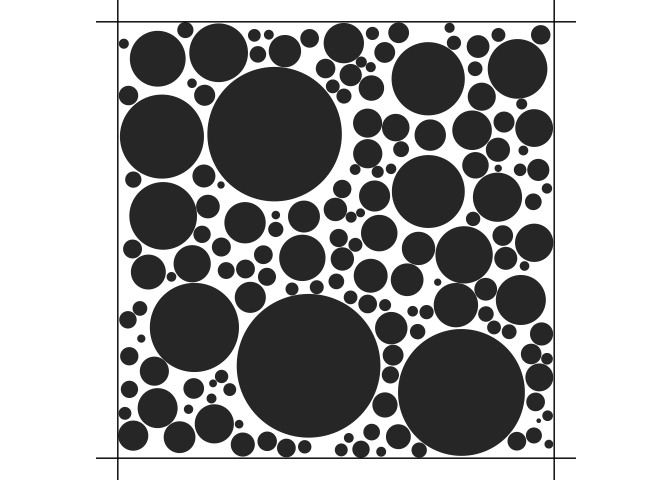

The Human brain can be seen as grey matter and white matter. The former is composed of cell bodies and dendrites, while the latter is composed of axons and glial cells. Neurons are made up of a cell body, dendrites, and an axon. The cell body contains the nucleus and other organelles, and the dendrites receive electrical signals from other neurons. The axon is a long, thin projection that carries signals away from the cell body to other neurons. The axons are surrounded by a myelin sheath, which is a fatty substance that insulates the axons and speeds up the transmission of electrical signals. The myelin sheath is not continuous, but rather has small gaps called nodes of Ranvier. The axons are bundled together in what is called a fiber bundle. The glial cells are responsible for maintaining the homeostasis of the brain and providing support and protection for the axons.
The scale of these tissues (of the order of micrometers) makes them invisible to the naked eye. However, a robust reconstruction of the brain microstructure is key to understanding brain function and dysfunction. This is where diffusion magnetic resonance imaging (MRI) comes in. Water molcules are in constant random motion due to their thermal energy and our body is made of 80% of water. The diffusion of water molecules in the brain is restricted by the cell membranes and myelin sheaths, and is faster along the axons than perpendicular to them. This anisotropic diffusion can be measured using diffusion MRI. Diffusion MRI is a non-invasive imaging technique which makes the magnetization of protons sensitive to the diffusion by applying so-called magnetic field diffusion gradients. The signal attenuation in diffusion MRI is then used to infer the microstructure of the brain.
An enormous amount of research has been done to understand the relationship between the signal attenuation and the microstructure of the brain and many parametric models have been devised to describe this relationship. However, the spatial resolution of diffusion MRI is limited by the voxel size, which is typically in the order of millimeters, therefore containing many different tissue types. In addition, depending on the experimental conditions (number, duration and strength of the gradients and time between two consecutive gradients), the MR signal might not be sensitive to all tissue types in the voxel. The midi package is meant to list the tissue models that have been proposed in the literature and to provide tools to simulate the MR signal attenuation predicted by these models under different experimental conditions.
The package is then used in an eponymous Shiny web application which provides a user-friendly interface for the package and allows to interactively visualize the MR signal attenuation induced by the different tissue models and design experimental conditions to optimize the sensitivity to specific tissue parameters. The Shiny web application can be launched with the midi::run_app() function for convenience but can be directly accessed at the following URL: https://midi-pastrami.apps.math.cnrs.fr/.
Installation
You can install the released version of midi from CRAN with:
install.packages("midi")You can install the development version of midi from GitHub with:
# install.packages("devtools")
devtools::install_github("lmjl-alea/midi")Example
We can instantiate a cylinder bundle compartment as follows:
library(midi)
cylinderBundleComp <- CylinderBundleCompartment$new(
axis = c(0, 0, 1),
radius = 1e-5,
diffusivity = 2.0e-9,
cylinder_density = 0.5,
radial_model = "soderman"
)Note that the instantiation of the compartment requires the specification of the cylinder axis, radius, diffusivity, cylinder density, and radial model, which are only the parameters related to the cylinder bundle geometry.
The parameters related to the experimental conditions are specified when calling the get_signal method which computes the signal attenuation for the compartment. In this example, we consider the following experimental conditions:
cylinderBundleComp$get_signal(
small_delta = 0.03,
big_delta = 0.03,
G = 0.040,
direction = c(0, 0, 1)
)
#> [1] 0.01616863We can also simulate and visualize cylinder bundles:
density <- 0.7
voxel_size <- 5 # micrometers
out <- simulate_bundle(density, voxel_size)
plot(out)
A 3D visualization of the cylinder bundle powered by the plotly package can be obtained by calling plot3d(). See the documentation online at https://lmjl-alea.github.io/midi/reference/plot3d.html for more details.